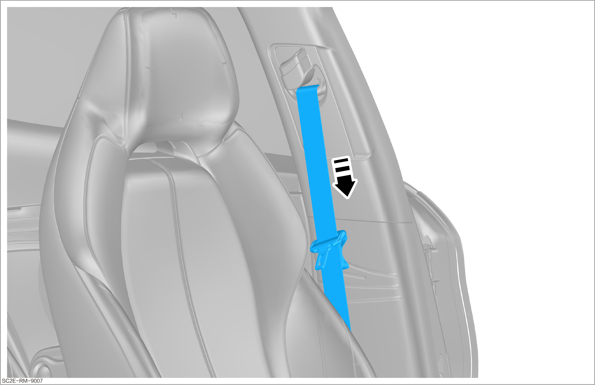
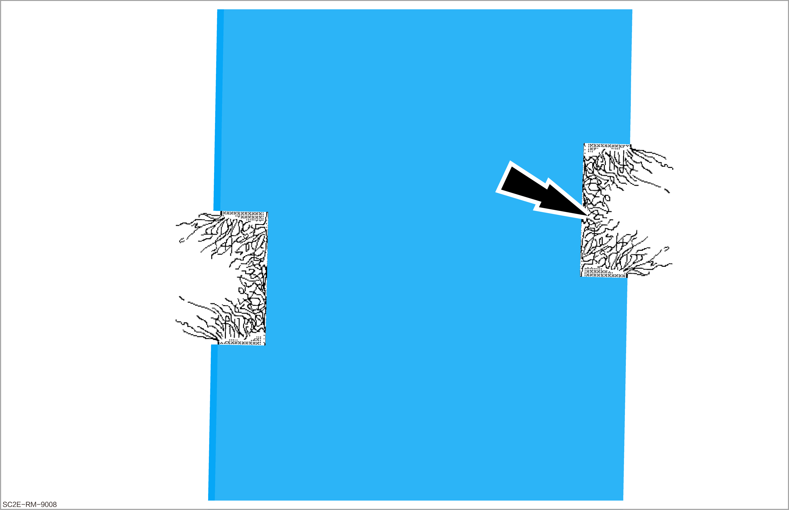
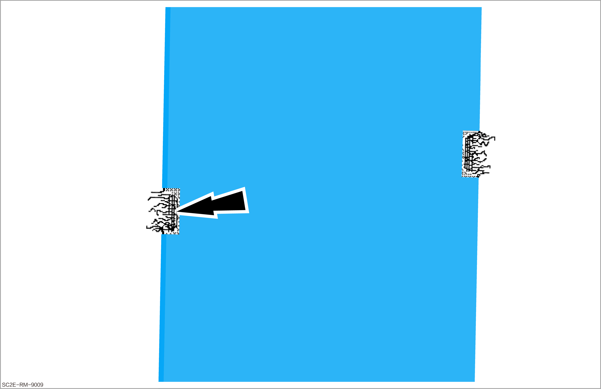
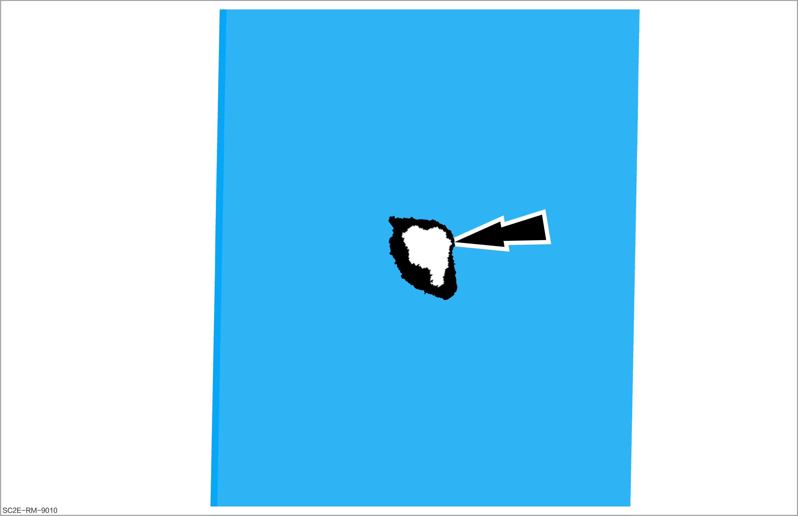

Inspection of Seat Belt
Inspection of seat belt function

Make sure that the seat belt is not twisted when retracted after it is pulled out.
Inspection of automatic retractor (locking function) of seat belt
-
Check the seat belt function.
-
Pull out the seat belt webbing with force quickly to remove it from the automatic retractor.
-
If the locking function fails, the whole seat belt must be replaced.
-
If the seat belt gets stuck when it is pulled out or retracted, first check whether the installation position of its automatic retractor does not change. If the installation is correct, replace the whole seat belt.
 -
-
Obtain a new work order for repair or replacement.
Inspection of seat belt webbing

-
Malfunction of the seat belt may cause serious injury.
-
If it is determined that there is damage according to the detection items, the necessity of replacing the seat belt must be explained to the user.
-
If the user refuses to replace the damaged seat belt, corresponding remarks must be made in the maintenance schedule.
In case of damages not caused by traffic accidents, such as wear, only the corresponding seat belt needs to be replaced.
Check the webbing
-
Pull out the seat belt completely from the automatic retractor.
-
Check that the seat belt is free of dirt, and clean it with mild soap solution if necessary.
Check the damage status
Check a vehicle that has been involved in a traffic accident. If one of the following damages (1 and 2) is found, replace the whole seat belt and its buckle.
Check a vehicle that has not been involved in a traffic accident. If any damage in items 1, 2, and 3 is found, only replace the damaged seat belt.
-
The seat belt is broken, torn, or worn.
 -
The edge of the seat belt is torn.
 -
There are burn marks from cigarettes or the like.
 -
Obtain a new work order for repair or replacement.